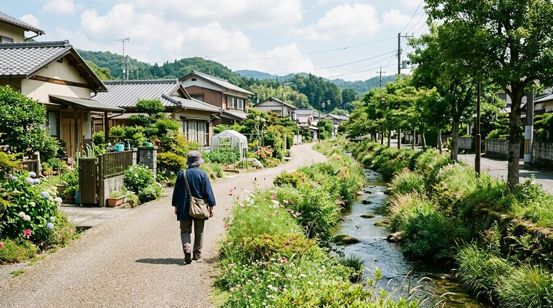
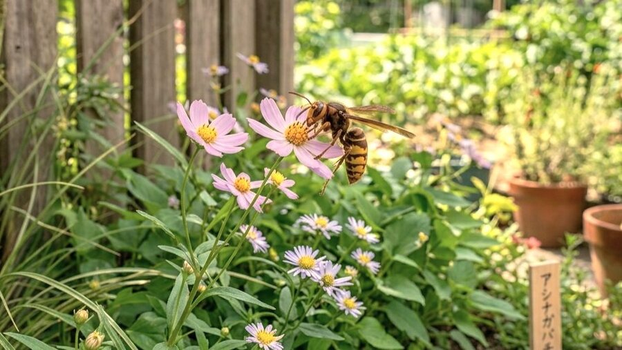
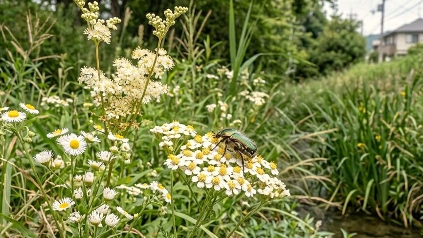
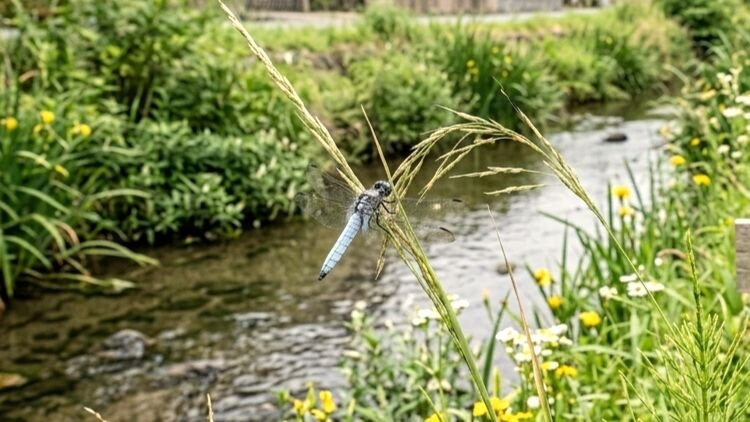
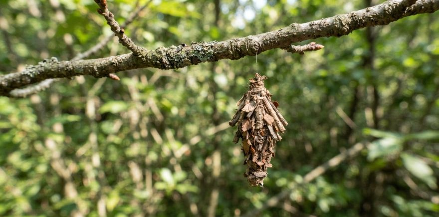

市民観察記録ファイル No.01
はじめに
ピコぬ市では、街の中で暮らす小さな生き物も、この街を構成する大切な存在として記録しています。 公園、庭、川沿い、住宅地などで確認される生き物には、昔から市民の間で親しまれてきた呼び名があります。 本図鑑では、正式な分類名とあわせて、ピコぬ市で使われている地域呼称を記録しています。
生き物一覧
ピコぬハチ
記録No. IKI-001
| 市民呼称 | ピコぬハチ |
|---|---|
| 正式名称 | アシナガバチ類 |
| 確認地域 | 市内住宅地・庭先 |
| 特徴 | 市内で古くから確認されているアシナガバチ類。住宅地や庭先など、人の暮らしに近い場所で観察されている。 |
市民記録:一部の個体について、人の近くで静かに活動する様子や、庭先で長期間観察された記録がある。
ぬかピコ川カナブン
記録No. IKI-002
| 市民呼称 | ぬかピコ川カナブン |
|---|---|
| 正式名称 | ハナムグリ |
| 確認地域 | ぬかピコ川周辺の緑地 |
| 特徴 | ぬかピコ川周辺の緑地で確認される甲虫。川沿いの植物に集まる姿がよく見られる。 |
市民記録:川沿いの植物に集まる姿から、市民の間でこの名前で呼ばれている。
記録町トンボ
記録No. IKI-003
| 市民呼称 | 記録町トンボ |
|---|---|
| 正式名称 | シオカラトンボ |
| 確認地域 | 記録町周辺の水辺 |
| 特徴 | 記録町周辺の水辺で昔から親しまれているトンボ。 |
市民記録:季節の変化を知らせる存在として、市民観察記録に残されている。
市民生き物記録
市民から寄せられた観察情報を保存しています。
| 確認日 | 場所 | 生き物 | 市民呼称 | 観察内容 | 写真 |
|---|---|---|---|---|---|
| 2026年6月 | 住宅地(記録町一丁目) | アシナガバチ類 | ピコぬハチ | 庭先の花にとまり、しばらく静かに活動していた | |
| 2026年6月 | ぬかピコ川緑地 | ハナムグリ | ぬかピコ川カナブン | 川沿いの白い花に複数個体が集まっていた | |
| 2026年7月 | 記録町 水路沿い | シオカラトンボ | 記録町トンボ | 水辺の草にとまり、しばらく同じ場所に留まっていた | |
| 2026年8月 | ぬかピコ川緑地 | アブラゼミの抜け殻 | ピコぬゼミの抜け殻 | 桜の木の幹の下に落ちていた | |
| 2026年8月 | ぬかピコ川緑地 | ミノガ（幼虫） | ピコぬミノムシ | 木の幹から垂れ下がっていた |  |